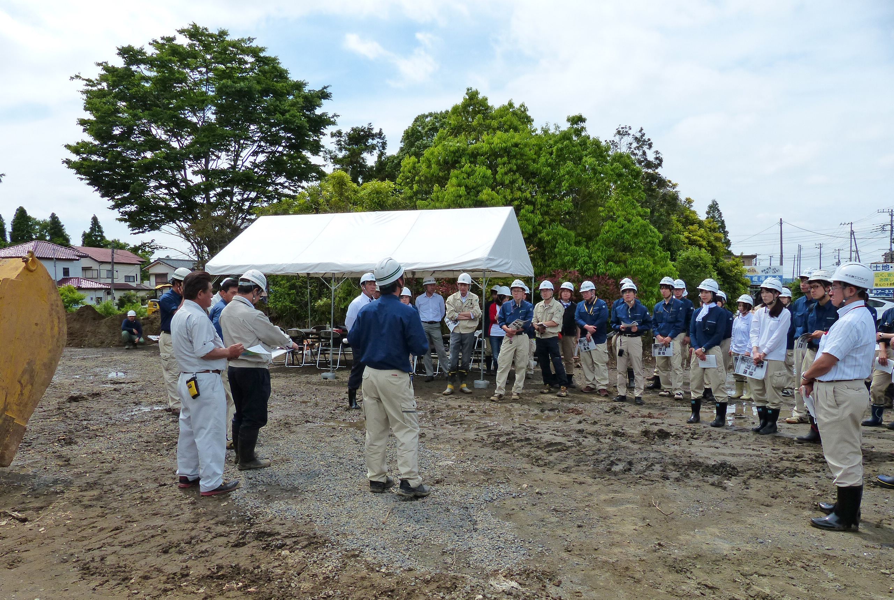
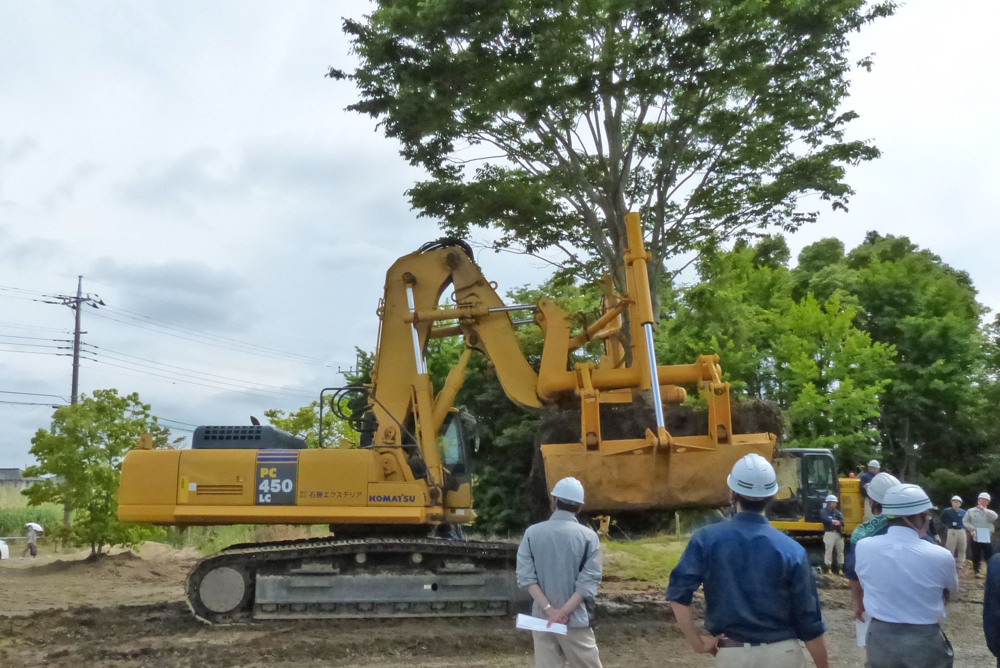
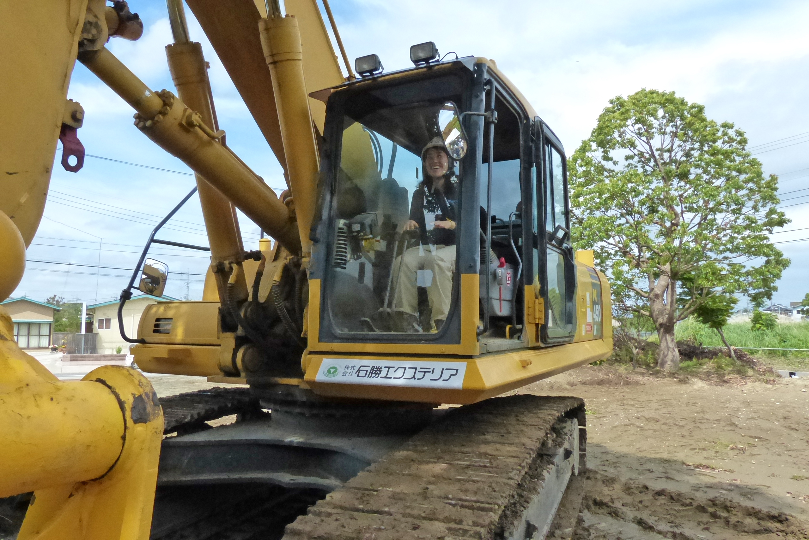
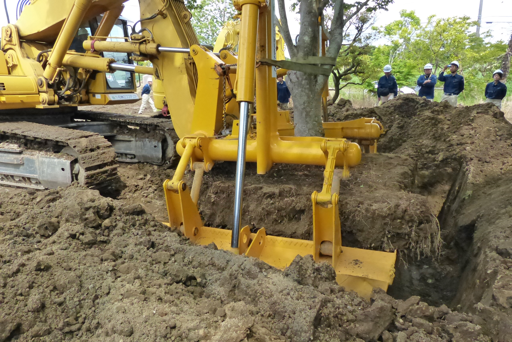
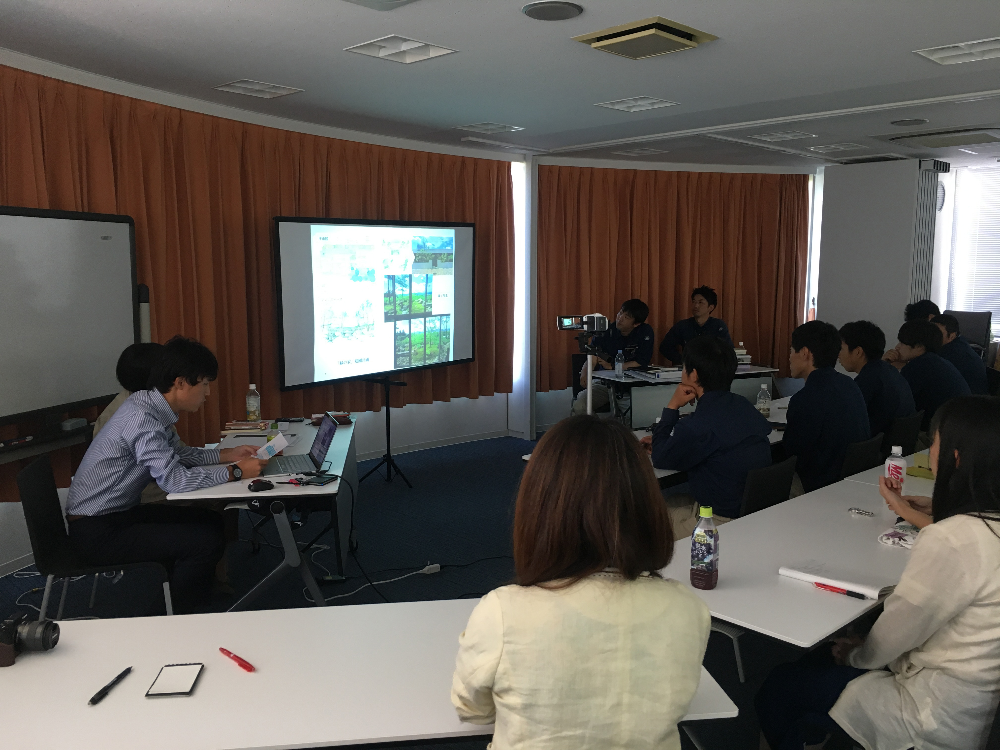

人材育成
Human Resource Development
プロフェッショナルの育成に力を注いでいます。
「自然と共生する空間づくりのプロフェッショナル集団」をめざして、
私たちは、さまざまな⼈材育成の取り組みを⾏っています。
当社が特許を保有する緑化技術や実務のなかで発掘された新技術について
社員が知識・ノウハウを共有できる場を設け、スキルアップにつなげています。
また、みどりの先駆者として、日本を代表する作品から
伝統的な空間構成や技術を学び、新たな空間創造に取り組んでいます。
大型専用機械移植工法「TPM 工法」研修会
2014 年 5 月 27 日、当社が特許を所有する大径木機械移植工法「TPM 工法」の研修会を千葉県
⼤網⽩⾥市の圃場にて開催しました。
- 
「TPM 工法」は また、伐採の選択しかなかった大径木が移植可能となり 貢献にも寄与する工法です。研修会では、 ⼯法とは異なる移植⽅ 、 大径木の樹 形を変えずに 法や、そのスケール感を 短時間に移植ができ、⾼い活着率を誇る移植⼯法です。 実際に大径木が動く様を間近で 体感することができました。 、既存の みどりを保護・保全できる環境 ⾒ることができ 、在来
- 
- 
- 
伝統 技法・伝統を学ぶ 造園技術講座
空間構成や伝統技術を学ぶ造園技術講座を 、2017 年から定期的に開催しています。

小形研三氏が手がけられた国営昭和記念公園⽇本庭園、⼩川治兵衛氏が手がけられた旧古川庭園、 深谷光軌氏が手がけられた京王プラザホテルなど、日本を代表する庭園作品を当社技術顧問と視 察し、作庭者の意図や現在の状況などについて意⾒交換し、実際の実務に活かせる訓練をしてい ます。また、社内でも実際の現場で実践した内容などの発表会や講座を実施し、社内間での共有 化を図っています。
-

-

-

- 